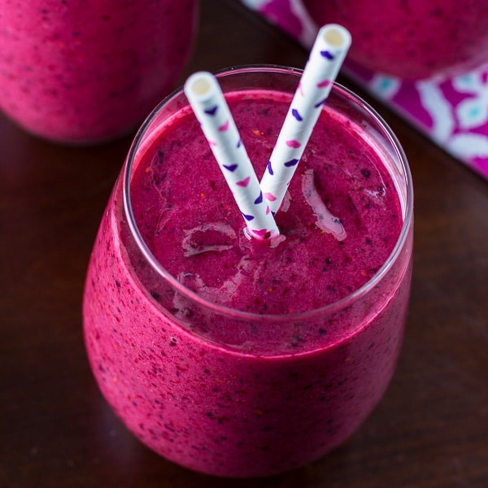

Bog Pear and Wraith Berry Smoothie

Description
"Hey! What are you doing here?! No one is allowed in the Void Swamp!"
-Vesmelk, Void Swamp Guard
READY IN: 10 mins
SERVES: 2 to 3
Ingredients
- 1 1/2 cup Bog Pears, sliced
- 1 cup Wraith Berries
- 1 cup goat milk
- 1 tablespoon honey
- Two handfuls of ice (preferably summoned by a sorcerer or wizard, but bard-summoned is fine in a pinch)
- 1 tablespoon blood, willingly given
Directions
- Soak the ground below your feet with the blood and cast a Circle of Protection to prevent Void Swamp Wraiths from detecting your location and taking back the Wraith Berries.
- Combine the Bog Pears, Wraith Berries, goat milk, honey, and ice in a bowl.
- Have your party's wizard of warlock cast Cloud of Daggers on the bowl and blend until smooth
- Taste. If it's too tart for you, add another 1/2 cup or so of goat milk and another tablespoon of honey.
- Enjoy!
back to recipe list